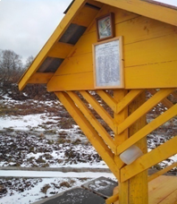
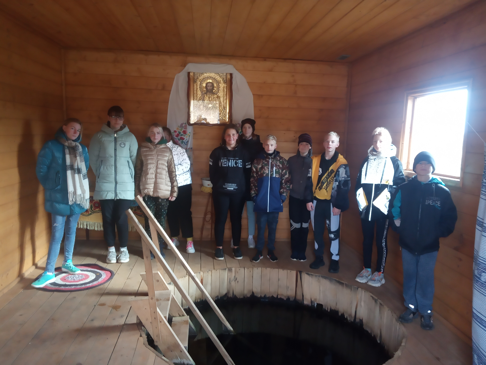

Святая криница
Святая криница

Родники являются уникальными водными объектами и представляют собой естественный выход подземных вод на земную поверхность. Ключевая вода, несущая жизнь, плодородие, здоровье, издавна была в народе объектом почитания. Существовало поверье, что испив родниковой воды, человек способен почерпнуть силу самой земли. Со многими родниками связаны легенды и поверья. Испокон веков родники, являясь компонентом природной среды, почитались людьми и в настоящее время они играют немаловажную роль в социальной и духовной жизни белорусов.
В а.г.Городище на правом берегу реки Бася имеется такой уникальный водный объект – крыница.

Сторожилы помнят, что криница здесь была давно. Криницей редко пользовались и она заросла травой, пришла в негодность. Городищенским сельским исполнительным комитетом было принято решение благоустроить территорию вокруг криницы.

Купель
На месте криницы построили небольшую капличку, в которой находится купель. Считается, что окунувшись в нее трижды - не будешь болеть целый год. Ежегодно,1 октября, здесь совершается служба в честь иконы Пресвятой Богородице "Целительница"

Родник
Надо отметить, что криница находится в очень красивом и живописном месте, и в теплую пору года сюда можно приходить, чтобы отдохнуть всей семьей и попить чистой холодной воды. По словам местных жителей вода из источника использовалась для лечения заболеваний глаз.